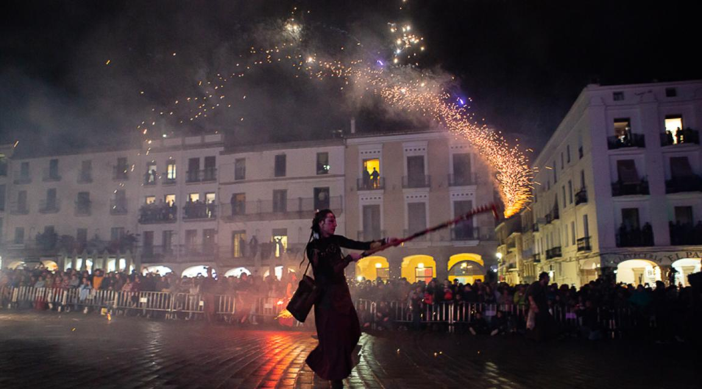
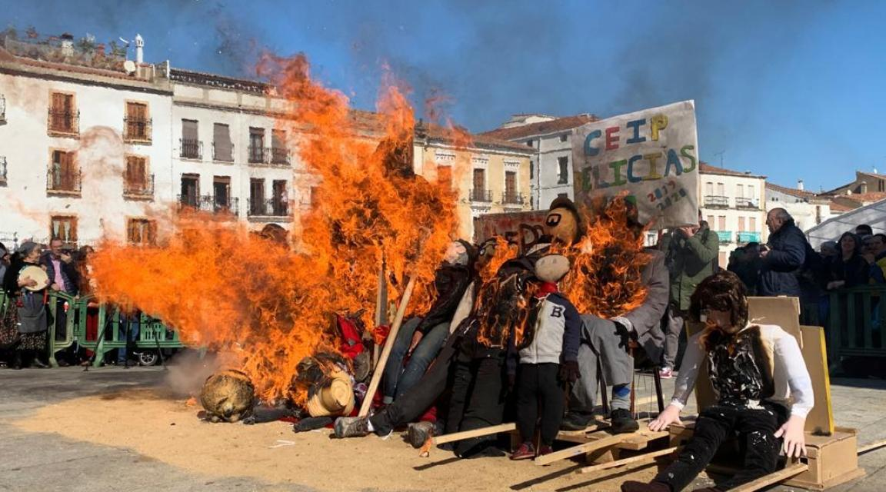
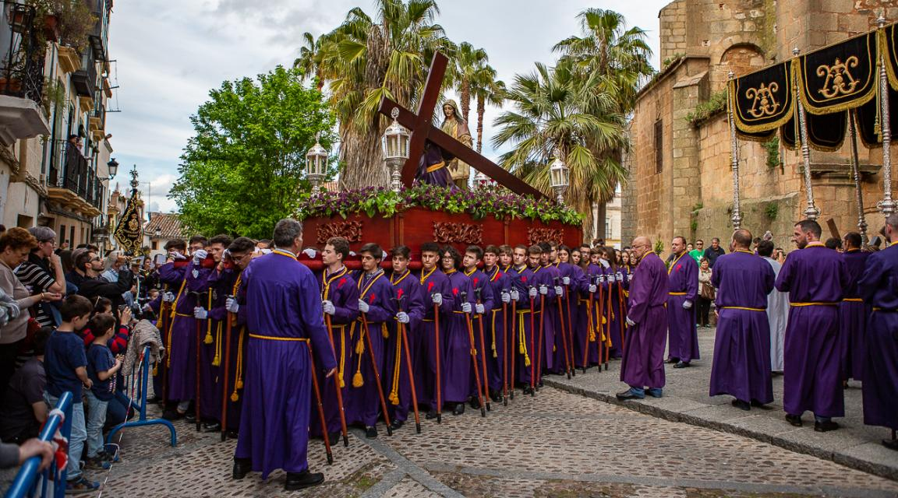

San Jorge
San Jorge es una de las fechas más importantes para Cáceres, se celebra la festividad del Patrón de la ciudad. La fiesta comienza el día 22 de abril con el desfile y lucha de moros y cristianos, y la quema del dragón; y continúa el día 23 con una misa y procesión. Cuenta la leyenda como Cáceres se reconquista mediante el engaño de un capitán cristiano a una princesa mora, a la que seduce para conseguir las llaves del pasadizo por el que entrar a la ciudad. Las tropas cristianas pudieron acceder por el pasadizo secreto y los musulmanes sorprendidos perdieron la batalla. Era el 23 de abril festividad de San Jorge. El padre de la princesa antes de morir y furioso por el engaño, lanzó una maldición sobre su hija. La convirtió en gallina y a sus doncellas en polluelos recubiertos de plumas de oro, que tendrían que vagar eternamente por los pasadizos de la ciudad.
Las Lavanderas
Esta es una fiesta de origen popular que se remonta a cuando las lavanderas de la ciudad celebraban el final del crudo invierno con el paseo y quema de un muñeco de trapo y paja, el Pelele, que simbolizaba lo peor de esta época del año. La celebración estaba perdida pero gracias a la iniciativa de los alumnos de Historia Oral, Aula de la Tercera Edad de la Universidad Popular de Cáceres se recuperó en 1989 y en la actualidad se realiza el viernes de carnaval. Días antes del viernes en el Aula de la Tercera Edad se confecciona el Pelele y los dulces típicos como coquillos que serán repartidos entre el público asistente. El Pelele es paseado en un burro desde la sede del Aula hasta la Plaza Mayor acompañado por las lavanderas ataviadas con el traje típico de este oficio, una charanga y alumnos y alumnas de los colegios cacereños que portan su propio Pelele. Al llegar a la Plaza se lee el Manifiesto de las Lavanderas y posteriormente se quema al Pelele o Febrero junto con los muñecos realizados en los colegios. Como final de fiesta se reparten los coquillos y aguardiente en el Foro de los Balbos amenizado con música regional.
Semana Santa
Las cofradías señeras de Cáceres están entre las más antiguas de España. La Semana Santa Cacereña está declarada Fiesta de Interés Turístico Internacional. Sus procesiones recorren la Ciudad Monumental, con lo cual a la belleza de los desfiles se une el marco incomparable por el que transcurren. Es una fiesta que conjuga lo religioso con lo emocional, lo sensorial con lo experimental,ver las procesiones, oler el incienso, oír las cornetas, escuchar las saetas, sentir el fervor de los cofrades... es una experiencia única e inolvidable que nadie puede perderse.
